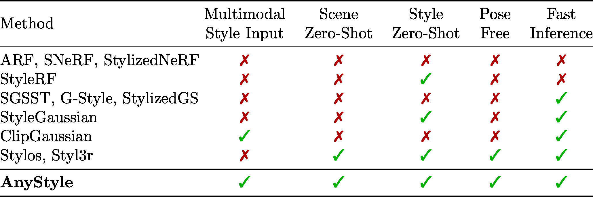
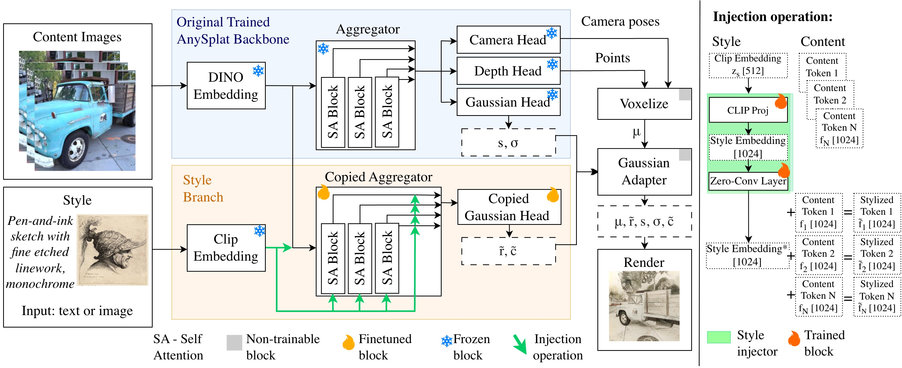

🎨 AnyStyle: Single-Pass Multimodal Stylization for 3D Gaussian Splatting 🎨
1University of Science and Technology
2Sano Centre for Computational Medicine
3Jagiellonian University
4IDEAS NCBR
5Microsoft


Abstract
The growing demand for rapid and scalable 3D asset creation has driven interest in feed-forward 3D reconstruction methods, with 3D Gaussian Splatting (3DGS) emerging as an effective scene representation. While recent approaches have demonstrated pose-free reconstruction from unposed image collections, integrating stylization or appearance control into such pipelines remains underexplored. Existing attempts largely rely on image-based conditioning, which limits both controllability and flexibility. In this work, we introduce AnyStyle, a feed-forward 3D reconstruction and stylization framework that enables pose-free, zero-shot stylization through multimodal conditioning. Our method supports both textual and visual style inputs, allowing users to control the scene appearance using natural language descriptions or reference images. We propose a modular stylization architecture that requires only minimal architectural modifications and can be integrated into existing feed-forward 3D reconstruction backbones. Experiments demonstrate that AnyStyle improves style controllability over prior feed-forward stylization methods while preserving high-quality geometric reconstruction. A user study further confirms that AnyStyle achieves superior stylization quality compared to an existing state-of-the-art approach.
Method

Results
Use the arrows or swipe to browse scenes. Each slide shows reconstruction alongside image- and text-prompted stylizations.
Image & Text Style Conditioning
Natural Language Prompts
Comparison with Stylos
Citation
@article{kaleta2026anystyle,
title = {AnyStyle: Single-Pass Multimodal Stylization for 3D Gaussian Splatting},
author = {Kaleta, Joanna and Świrta, Bartosz and Kania, Kacper and Spurek, Przemysław and Kowalski, Marek},
journal = {arXiv preprint arXiv:2602.04043},
year = {2026}
}